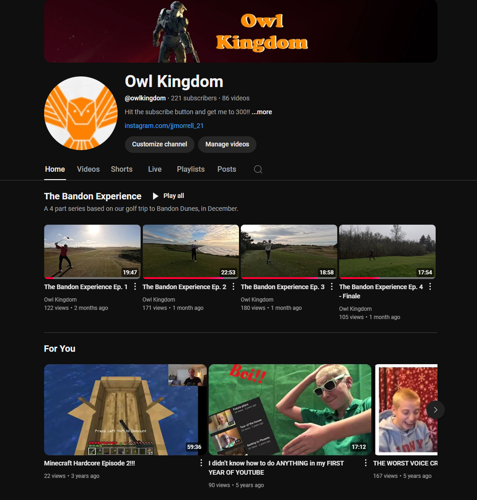

My Passion for Video
Ever since the day my older brother made his YouTube channel, I always wanted my own. That day finally came on October 29th, 2016 when i made OwlKingdom, my very own YouTube Channel. After making a couple videos I discovered that I had such a strong passion for creating videos, and I loved all the filming and editing that went into it.
Check out this video!
For more music inspiration, check out the OwlKingdom channel.